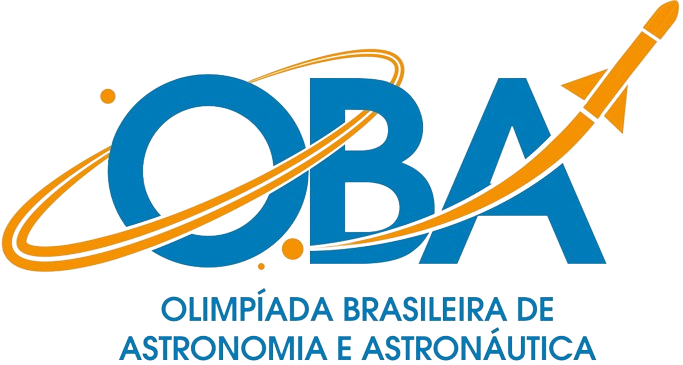

Prepare-se para explorar o universo e competir com os melhores.
A Olimpíada Brasileira de Astronomia e Astronáutica (OBA) é uma competição anual que visa incentivar o interesse dos jovens pela astronomia e ciências afins. Estudantes de todo o Brasil participam, testando seus conhecimentos e habilidades em um ambiente desafiador e educativo.
Artigos, e-books e apresentações sobre diversos tópicos de astronomia.
Aulas ministradas por especialistas, cobrindo desde conceitos básicos até tópicos avançados.
Explore o universo através de simulações interativas e modelos 3D.
Playlist do canal Insight Edu, ótimo canal de educação para olimpíadas, é super recomendado!
O software de código aberto, Stellarium, é um ótimo recurso de simulação que pode ser usado para o estudo de constelações, movimento de planetas, etc. O software pode ser instalado clicando aqui.
O Gaia Sky é um projeto alemão de mapeamento do espaço, sendo utilizado como um software de visualização 3D em tempo real do universo, com uma maior perspectiva do que o Stellarium, sendo até um complemento para tal. O software pode ser instalado clicando aqui.